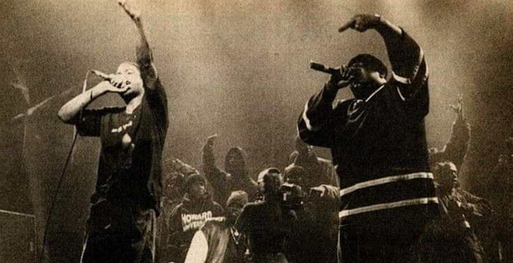
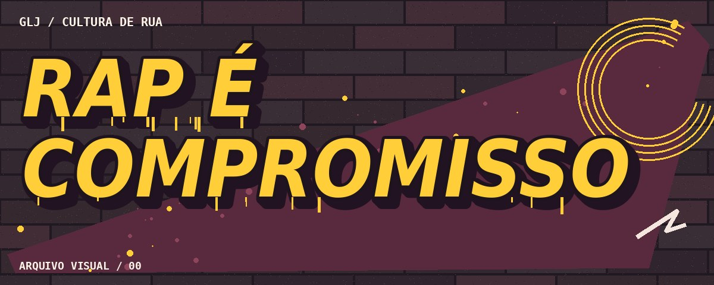
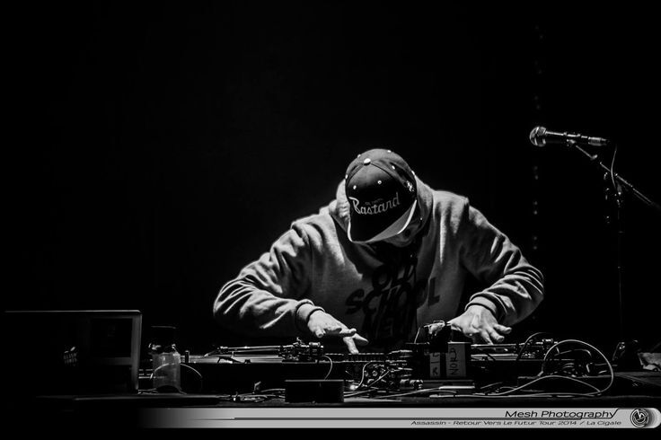
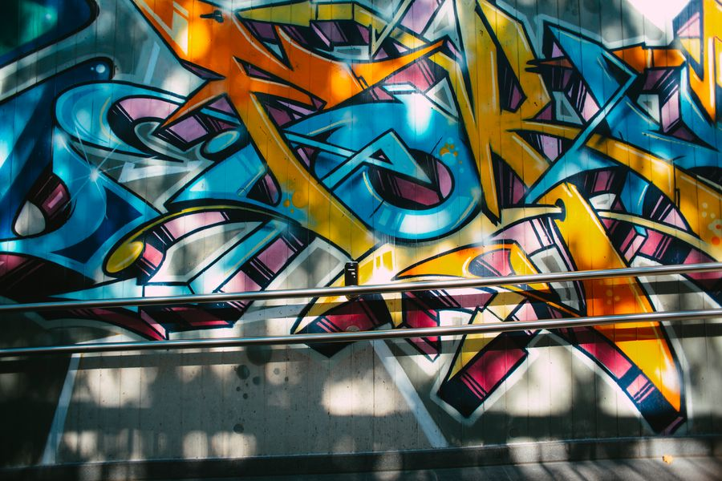
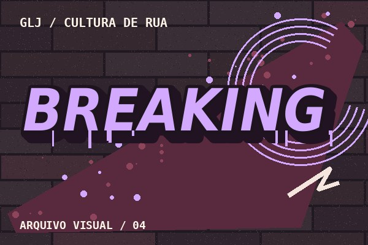

A palavra ocupa espaço
Rimas e narrativas ajudam a registrar experiências de uma comunidade.
EDIÇÃO 01 HIP-HOP • MEMÓRIA • RESISTÊNCIA
EDIÇÃO 01 / DO BRONX AO MUNDO
Das festas de bairro às cenas de dez países. Conheça quem transforma batida, palavra e muro em memória e resistência.

Voltar ao topoPULSO DA CULTURA
Quatro ilustrações autorais sobre práticas associadas ao hip-hop.

Rimas e narrativas ajudam a registrar experiências de uma comunidade.

Cortes, colagens e batidas reorganizam sons e abrem espaço para criar.

Letras, cores e personagens tornam visíveis assinaturas, memórias e ideias.

A dança cria diálogo e disputa por meio de movimento, improviso e ritmo.
MEMÓRIA VIVA
No Bronx dos anos 1970, festas comunitárias reuniram DJs, MCs e dançarinos. Ao prolongar os trechos de percussão, os DJs criavam espaço para a dança e para a voz dos MCs. A cultura cresceu junto de práticas visuais como o graffiti e passou a circular por discos, shows e encontros.
CENAS LOCAIS
Dez pontos de partida para explorar como comunidades deram sotaques próprios ao hip-hop.
| País | Cidade | Cena | Expressão | Tema | Ponto de partida |
|---|---|---|---|---|---|
| Estados Unidos | Bronx | Festas de bairro | DJ e MC | Criação comunitária | Pesquisar os breaks |
| Brasil | São Paulo | Rap de periferia | Rap | Denúncia do racismo | Ouvir Racionais MC’s |
| França | Marselha | Rap em francês | Rap | Identidade urbana | Ouvir IAM |
| Senegal | Dacar | Hip-hop galsen | Rap | Mobilização cívica | Pesquisar Y’en a Marre |
| Reino Unido | Londres | Grime | MC e produção | Circulação independente | Ouvir Skepta |
| Cuba | Havana | Rap cubano | Rap | Debate sobre raça | Ouvir Obsesión |
| África do Sul | Cidade do Cabo | Hip-hop local | Rap | Expressão multilíngue | Ouvir Prophets of da City |
| Japão | Tóquio | Hip-hop japonês | Rap e DJ | Adaptação de linguagem | Ouvir Rhymester |
| Chile | Santiago | Hip-hop chileno | Rap | Memória urbana | Ouvir Ana Tijoux |
| Alemanha | Berlim | Rap em alemão | Rap | Identidade e migração | Pesquisar a cena local |
GUIA DA CULTURA
Explore quatro elementos e indique uma referência para quem quer conhecer a cultura.
O MC usa a voz e o ritmo para narrar, rimar e dialogar com a plateia.
O DJ seleciona e combina gravações. O scratch explora o som do disco em movimento.
Letras e imagens ganham escala na cidade. Um mural pode registrar a memória de um bairro.
B-boys e b-girls combinam passos em pé, movimentos no chão, giros e pausas.
CULTURA E RESISTÊNCIA
No Brasil, o rap de periferia abriu espaço para narrar o cotidiano de comunidades negras e discutir violência e desigualdade. Em outros países, a cultura ganhou novas línguas e se aproximou de pautas locais. Em Dacar, por exemplo, artistas de rap participaram da mobilização cívica Y’en a Marre.
SEU ARQUIVO
Monte uma lista de referências e marque o que já pesquisou.
MICROFONE ABERTO
Registre o que ouviu, viu ou pesquisou e compartilhe sua leitura da obra no formulário demonstrativo.
Voltar ao topoGUIA RÁPIDO
Busque um termo ou abra uma pergunta para conhecer a linguagem e as cenas do hip-hop.
A cultura se consolidou no Bronx, em Nova York, nos anos 1970.
Rap é uma forma de expressão musical e vocal dentro da cultura hip-hop.
É um trecho de destaque rítmico que pode servir de base para dança ou rimas.
Ele inscreve letras, imagens e identidades na paisagem urbana.
É um encontro em que MCs disputam com versos, muitas vezes improvisados.
O Mapa da cena sugere Racionais MC’s como ponto de partida.
Cada comunidade adapta ritmos e formas de expressão a suas línguas e experiências.
Letras e coletivos podem tornar públicas experiências de racismo, violência e desigualdade.
Use a aba Sugestões para adicionar um artista, coletivo ou projeto.
Os itens ficam disponíveis durante o uso da página e são limpos ao recarregar.
Nenhum resultado encontrado
Voltar ao topoSOBRE O PORTAL
Gabriel, Lucas e Juan · Trabalho Prático Integrador · Avaliação A1
Arte digital autoral criada para esta edição.